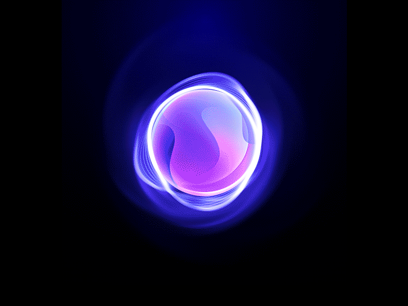

Python
C, Java, C++
I turn curious questions into intelligent systems — combining machine learning, thoughtful engineering, and human-centred design to build technology that matters.
I’m an AI developer in progress, driven by the challenge of turning complex ideas into useful, understandable products.

I believe good AI is more than a clever model. It’s a complete experience — reliable, explainable, and built around a real problem.
My work explores Python, machine learning, retrieval-augmented generation, and computer vision also Cyber Security. I enjoy moving from a rough idea to a working prototype, testing assumptions, and improving the details that make a project genuinely useful and privacy which provide security.
This portfolio is a snapshot of that journey: experiments, lessons, and projects that keep pushing me forward.
A growing toolkit for building end-to-end intelligent applications — from data preparation to the user-facing experience.
C, Java, C++
NumPy, Pandas, Scikit-learn, LangChain, opencv-python, Matplotlib,
Image processing, segmentation, classification, and visual inference.
Embeddings, retrieval, context-aware answers, and document-based assistants.
Connecting models to usable interfaces, services, and application workflows.
HTML, CSS, JavaScript, Git, AWS, N8N.
A document-grounded assistant designed to help students find college rules, schedules, and course information through contextual answers.
View project repository ↗An experimental SAR-image workflow exploring spill-region segmentation and classification against oil-spill look-alikes.
View project repository ↗A space for small prototypes, model evaluations, and experiments that turn new techniques into practical demos.
Explore experiments ↗Every project teaches something new. This is a living timeline for your milestones, internships, events, and achievements.
Strengthening programming, data structures, and the math and intuition behind machine learning.
Applying new concepts to working prototypes, learning through debugging, iteration, and evaluation.
Shipping projects, collaborating with other builders, and making AI systems more useful and trustworthy.
I’m interested in thoughtful projects, learning opportunities, and conversations about AI and Security. Let’s make something useful.